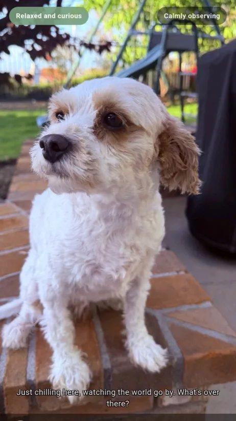
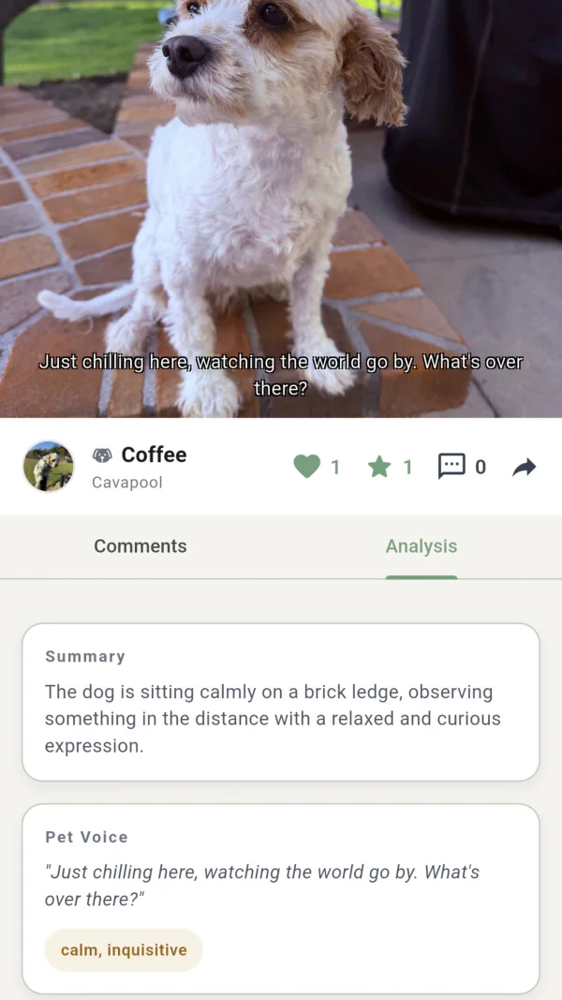
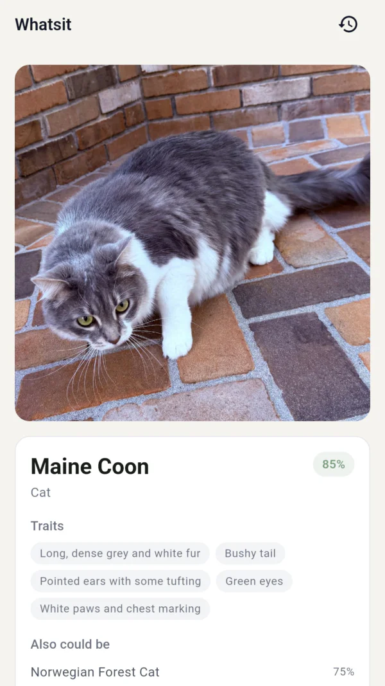
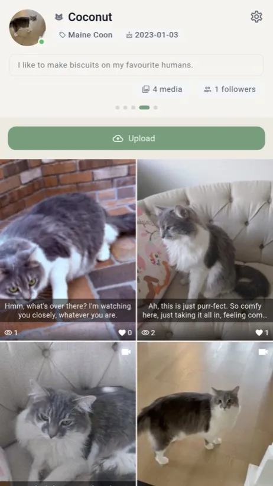
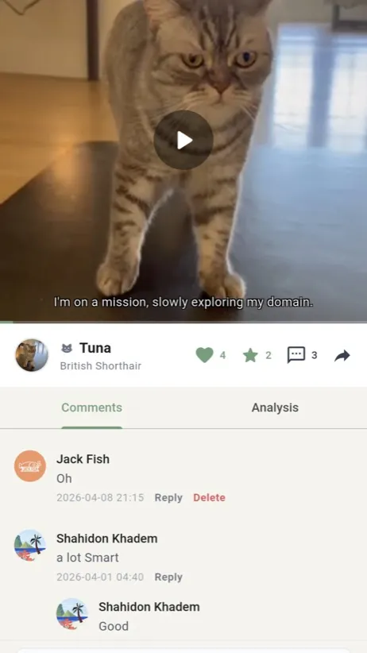

Snap a photo of your dog, cat, or any animal you meet. Paworld reads their expression, decodes their mood, and writes what they're really thinking — in their own voice.

Every analysis ends with a pet voice — a short line in your pet's own voice, shaped by their posture, expression, and context. It's not pulled from a list. Every photo generates its own.


Stray cat in the park? A curious bird on the walk home? A dog you can't quite place the breed of? Snap it — Paworld names the species, breed, confidence, and distinctive traits.
Every photo you take becomes a page in their voice diary. Look back months later and relive what they were thinking — a full archive of their mood, their moments, their voice.


A whole feed of real pets telling real stories. Like, comment, save, follow — meet the people who listen to their pets the way you do.
Paworld hides the vision models and behavior science behind a simple flow. You press the shutter; we handle the rest.
A photo or a short video. No special gear.
AI reads the expression, posture, and context.
Get a short line in your pet's own voice.
As a branded card — or keep it just for family.
10 free analyses every month. No card required to start. Upgrade when you want more.
Dogs and cats are our strongest — that's where the pet voice shines. Whatsit also identifies birds, reptiles, and wildlife, so you can ID animals you meet on walks and hikes too.
Every voice is generated for your specific photo — from your pet's posture, facial expression, and context in frame. It's not a random pick from a library. Two photos of the same pet won't produce the same voice.
Our analyses reflect visual cues and behavior science, and we show the reasoning so you can judge for yourself. For medical concerns, please consult a qualified veterinarian.
Everything is private by default — only you and the family members you invite can see your pet's profile. You choose whether to publish any individual moment to the community feed. You can export or delete your account at any time.
Yes — 10 free analyses every month, no card required. Pro and Max tiers unlock more if you want to go deeper.